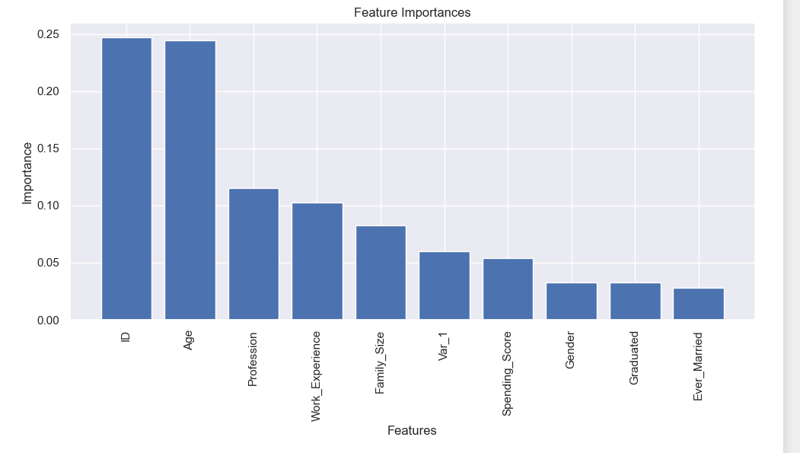
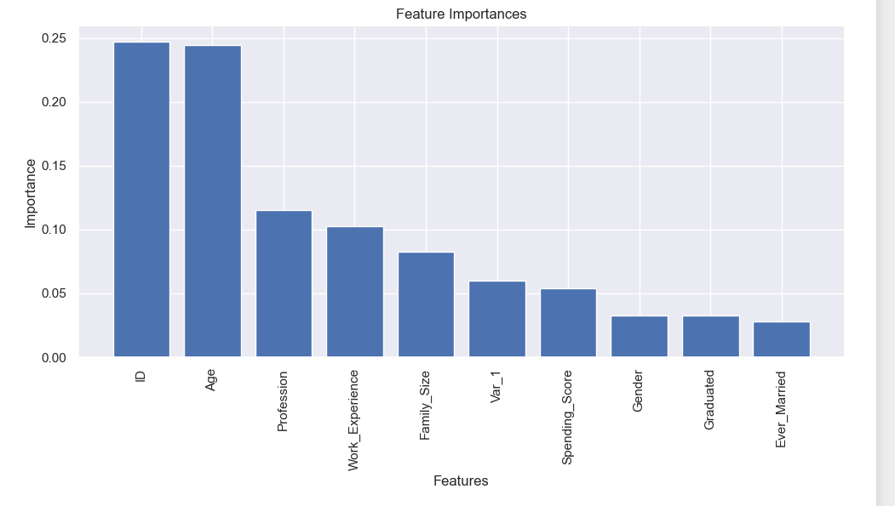
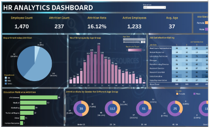
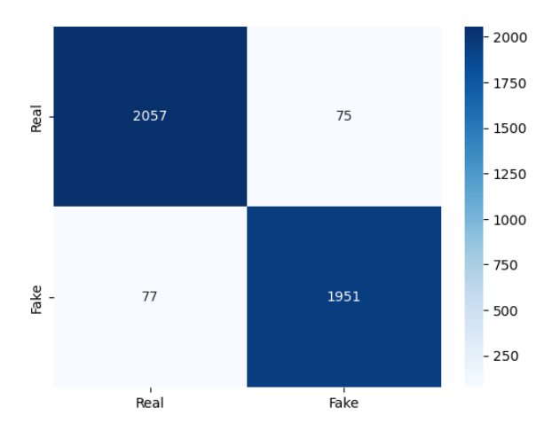

Welcome to my personal profile website! I am a seasoned professional in the restaurant industry with expertise in data analytics. Throughout my career, I have gained extensive experience in menu development, kitchen operations, and customer service. As a data analyst, I use data visualization tools such as Tableau and Pandas, and employ statistical analysis techniques including regression and clustering to extract meaningful information from large datasets. I am dedicated to leveraging data-driven insights to make informed decisions that improve business performance.
My unique combination of industry knowledge and analytical skills enables me to help businesses make informed decisions that drive success. Whether it's developing new concepts, analyzing customer feedback, or identifying opportunities to increase revenue, I am committed to using data to provide valuable insights that improve business performance.
Please browse through my work experience, skills, and achievements to learn more about what I can bring to the table. If you have any questions or would like to get in touch, please don't hesitate to reach out.
 

This project on predicting customer segmentation through machine learning models can be highly beneficial to a company as it provides insights into customer behavior and preferences, allowing for more targeted marketing efforts. By understanding customer segments and tailoring outreach strategies to each group, companies can increase their chances of success in new markets. Additionally, predictive models can assist with identifying potential customers and allocating resources more efficiently, leading to improved customer satisfaction, increased revenue, and a stronger competitive edge.

As part of this project, I demonstrated proficiency in using Python's pandas library to clean and transform raw data into a format that is usable for analysis. By creating visualizations with Tableau, I was able to provide a clear and concise summary of the insights generated from the data, allowing for quick and easy decision-making. Such skills are highly beneficial to a business looking to improve their operations, identify trends, and optimize resources. The project also showcases my ability to present complex information in a user-friendly manner, which is essential for effective communication and collaboration within a team.

The HR analytics dashboard project is a powerful tool for businesses that want to make data-driven decisions related to their human resources. By using SQL queries to test and validate the quality of the data, businesses can trust the accuracy of the insights gained from the data. The visualizations created in Tableau Desktop provide a clear and intuitive way to understand trends and patterns in employee data, ultimately enabling businesses to make informed decisions about their workforce.

The fake news classifier model is a powerful tool that can help individuals and businesses combat the spread of false information. By leveraging machine learning algorithms to distinguish between fake and real news, this model can be used as a browser extension or app to flag articles that are likely to be fake news. For businesses, the model can be used for reputation management by quickly identifying and responding to fake news articles that mention their brand. With an accuracy score of 0.96, this model demonstrates the potential for machine learning algorithms to assist in identifying and combating the spread of misinformation and fake news online.

Utilizing data analytics and machine learning to identify high-risk traffic zones in Las Vegas and surrounding Clark County can be incredibly beneficial for businesses in the transportation industry. For example, ridesharing companies can use this data to provide safer routes and better protect their drivers and passengers. Insurance companies can also leverage this information to adjust their rates and better understand the risks associated with insuring drivers in different areas. In addition, city and county governments can use this data to inform targeted road safety measures and prioritize infrastructure improvements in areas with high accident rates. Overall, the project highlights how data analytics and machine learning can be used to improve road safety and reduce the impact of accidents on businesses and communities.

This project demonstrates how data analytics and statistical analysis can be used to evaluate the performance of a new product in a competitive market. By applying multiple linear regression analysis, collecting summary statistics on suspension coils, and running t-tests, I was able to identify key performance indicators that distinguished AutosRUs' MechaCar prototype from its competitors. My study also provided insights into areas for improvement and helped to inform data-driven strategies for the automotive industry. This project showcases my expertise in R and my ability to analyze complex datasets to derive valuable insights that can be used to make informed business decisions.